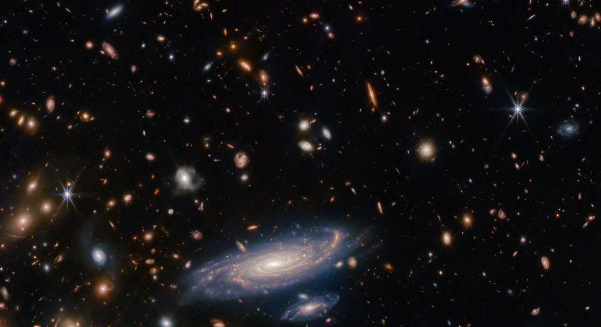

Noticias Recientes
Astronomos observan las primeras galaxias con el telescopio Jemes Webb
Telescopio Espacial James Webb (JWST) es una maracilla de la astronomia moderna, diseñado para mirar más profundo en el espacio que nunca antes. Sus recientes observaciones de las glaxias mas tempranas han proporcionado informacion nueva sobre la historia del universo, redefiniendo nuestra comprensión de la evolución cosmica
Hatay, el misterioso exoplaneta que podria estar hecho de hierro puro

Tahay es un planeta singular debido a su órbita excepcionalmente rápida, completando un giro alrededor de su estrella en tan solo 7,7 horas. Aunque existen otros planetas con órbitas veloces, o que lo distingue es su densidad(casi el doble de la de la Tierra) . Esto sugiere que estaría compuesto casi en su totalidad de hierro.
La Misión OSIRIS-REx de la NASA regresa exitosamente con muestras del asteroide Bennu

La NASA ha logrado un hito histórico. Después de siete años en el espacio, la misión OSIRIS-REx ha traído a la Tierra una muestra del asteroide Bennu. Esta hazaña permitirá a los científicos profundizar en los orígenes del Sistema Solar y entender mejor al asteroide. El reingreso fue transmitido por el canal de YouTube de la agencia espacial.
Astrónomos detectan que los agujeros negros «eructan» estrellas años después de haberlas absorbido

Los agujeros negros son fascinantes fenómenos astronómicos que tienen la capacidad de atrapar y desgarrar estrellas debido a su inmensa gravedad. Un nuevo estudio ha descubierto que pueden «eructar» años más tarde. Los estalles están disponibles en el sitio de preimpresión arXiv.org.
El telescopio James Webb detecta intrigantes señales de potencial vida en un exoplaneta oceánico

A tan solo 120 años luz de distancia, orbitando una tenue estrella roja, se encuentra un exoplaneta denominado K2-18b, que podría estar compuesto de agua. Los investigadores han identificado rastros de dimetil sulfuro en la atmósfera de K2-18b, una sustancia que, en la Tierra, es producida exclusivamente por organismos vivos, principalmente el fitoplancton. Este descubrimiento ha llevado a los científicos a plantear la posibilidad de vida en este lejano exoplaneta. El estudio que documenta este hallazgo ha sido aceptado para su publicación en The Astrophysical Journal Letters.
Mercurio también posee las enigmáticas ondas sonoras de plasma

Los planetas con magnetosferas siempre han atraído la atención de los astrónomos debido a las fascinantes propiedades que poseen. Cuando se las observa con instrumentos precisos, emiten sonidos hermosos y enigmáticos. Estos fenómenos, conocidos como ondas de coro, se han documentado en la Tierra, Júpiter, Saturno, Urano y Neptuno. Ahora un nuevo estudio publicado en Nature Astronomy ha revelado la detección de estas ondas en Mercurio.